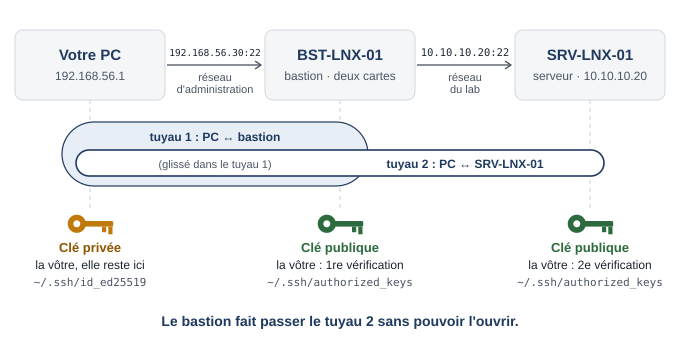

Contexte
Aujourd’hui, les redirections de ports du lab donnent un accès direct à SRV-LNX-01 (SSH) et à SRV-WIN-01 (RDP). L’audit demande qu’un seul point d’entrée soit exposé et que les serveurs refusent toute administration qui ne vient pas de ce point.
Comme en entreprise, le bastion a une patte dans chaque réseau : une carte côté serveurs (LAB-HEXALOG) et une carte côté administration. Dans le lab, la carte d’administration est en Accès par pont (vu au TP 2) : le bastion est branché, comme votre PC, sur le réseau du partage de connexion de votre téléphone, et reçoit son adresse du même DHCP, celui du téléphone. Votre PC le joint directement, sans redirection. Les serveurs n’ont aucune carte sur ce réseau : depuis le partage de connexion, seul le bastion est joignable, par votre PC mais aussi par tout autre appareil connecté au même partage (votre téléphone, un voisin à qui vous l’ouvrez). C’est le rôle d’un point d’entrée : il est exposé, donc il doit être durci.
Dans la suite, ADRESSE-BASTION désigne l’adresse que la carte en pont du bastion aura reçue (étape 1) : remplacez-la à chaque fois par la vôtre.
Architecture cible
Redirections de ports de LAB-HEXALOG en fin de TP :
| Nom | Hôte | Invité | Statut |
|---|---|---|---|
| web-srv | 127.0.0.1:8080 | 10.10.10.20:80 | conservée (service public) |
| ssh-srv | 127.0.0.1:2222 | 10.10.10.20:22 | supprimée |
| rdp-dc | 127.0.0.1:33890 | 10.10.10.10:3389 | supprimée |
Aucune redirection ne remplace ssh-srv : votre PC joint le bastion directement, sur sa carte en pont.
Étape 1. Créer BST-LNX-01
- Clonez
TPL-DEB13en clone lié nomméBST-LNX-01, avec de nouvelles adresses MAC. RAM : 768 Mo suffisent. - Dans Configuration → Réseau :
- Adaptateur 1 : Réseau NAT → LAB-HEXALOG ;
- Adaptateur 2 : cochez Activer la carte réseau, mode Accès par pont, nom : la carte par laquelle votre PC est connecté, c’est-à-dire la carte Wi-Fi reliée au partage de connexion de votre téléphone (et non une carte VirtualBox).
- La carte 1 reçoit une adresse provisoire du DHCP du lab ; la carte 2 n’est pas encore configurée. Dans la console VirtualBox, connecté en
sysadmin:
sudo preparer-clone.sh bst-lnx-01
sudo nano /etc/network/interfaces # enp0s3 en statique : 10.10.10.30/24, passerelle 10.10.10.1Dans le même fichier, ajoutez à la fin la carte 2. Elle prend son adresse auprès du DHCP de votre partage de connexion (ou de votre box à la maison), comme votre PC :
# Carte 2 : accès par pont (partage de connexion)
allow-hotplug enp0s8
iface enp0s8 inet dhcpCe DHCP ne donne pas qu’une adresse : il fournit aussi une passerelle (le téléphone) et des serveurs DNS. Il ne faut pas les laisser remplacer ceux du lab : le bastion aurait deux routes par défaut, et le client DHCP de Debian (dhcpcd) réécrirait /etc/resolv.conf avec les DNS du téléphone, qui ne connaissent pas hexalog.local. On le lui interdit pour cette seule carte, à la fin de son fichier de configuration :
sudo nano /etc/dhcpcd.conf# Carte 2 (accès par pont) : une adresse, ni passerelle ni DNS
interface enp0s8
ipv4only
nogateway
nohook resolv.confLa route par défaut reste donc celle de la carte 1 (10.10.10.1), qui donne Internet au bastion par le NAT du lab, et les DNS restent ceux du domaine. Puis :
sudo nano /etc/resolv.conf # même contenu que sur SRV-LNX-01 (TP 3, étape 2)
sudo reboot- Après redémarrage :
ip -br a # enp0s3 : 10.10.10.30/24 ; enp0s8 : une adresse du partage de connexion
ip route # une seule route par défaut : via 10.10.10.1 dev enp0s3
cat /etc/resolv.conf # toujours 10.10.10.10 en premier
ping -c 2 srv-lnx-01
sudo apt update && sudo apt full-upgrade -yNotez dans votre journal l’adresse de enp0s8 : c’est ADRESSE-BASTION. Elle vient du DHCP du téléphone et peut changer (partage de connexion relancé, autre téléphone, maison) : en début de séance, vérifiez-la avec ip -br a sur la console du bastion.
- Sur SRV-WIN-01, ajoutez l’enregistrement DNS : Outils → DNS → zone
hexalog.local→ clic droit → Nouvel hôte (A ou AAAA)… → nombst-lnx-01, adresse10.10.10.30→ Ajouter un hôte.
Étape 2. Supprimer les redirections d’administration
Dans le Gestionnaire de réseau (LAB-HEXALOG → Redirection de ports), supprimez ssh-srv et rdp-dc (si vous l’aviez créée au TP 5). Ne créez aucune redirection pour le bastion : il est joint directement sur sa carte en pont.
VBoxManage natnetwork modify --netname LAB-HEXALOG --port-forward-4 delete ssh-srv
VBoxManage natnetwork modify --netname LAB-HEXALOG --port-forward-4 delete rdp-dcDepuis le PC, vérifiez que l’ancien accès est fermé et que le bastion répond sur sa carte en pont :
ipconfig # votre adresse sur le partage de connexion (même réseau que le bastion)
ssh -p 2222 sysadmin@127.0.0.1 # refusé : la redirection n'existe plus
ping -n 2 ADRESSE-BASTION
ssh sysadmin@ADRESSE-BASTION(Sur un PC Linux : ip -br a au lieu d’ipconfig, et ping -c 2.)
ssh vous demande de valider l’empreinte du bastion : pour votre PC, c’est une machine inconnue. Avant de répondre yes, comparez cette empreinte avec celle que donne la console du bastion (ssh-keygen -lf /etc/ssh/ssh_host_ed25519_key.pub) et notez la vérification dans votre journal. Retirez aussi de known_hosts l’ancienne entrée [127.0.0.1]:2222 (la clé de SRV-LNX-01 par l’ancienne redirection), devenue inutile :
ssh-keygen -R "[127.0.0.1]:2222"Enchaînez avec l'étape 3
Dès maintenant, le bastion est joignable par tout appareil connecté à votre partage de connexion, et il accepte encore le mot de passe du lab, que toute la classe connaît. Passez directement à l’étape 3 : une fois durci, il n’acceptera plus que votre clé.
Étape 3. Durcir le bastion
- Déposez la clé du PC sur le bastion (le mot de passe est encore accepté) :
Get-Content $env:USERPROFILE\.ssh\id_ed25519.pub | ssh sysadmin@ADRESSE-BASTION "mkdir -p ~/.ssh && chmod 700 ~/.ssh && cat >> ~/.ssh/authorized_keys && chmod 600 ~/.ssh/authorized_keys"(Sur un PC Linux : ssh-copy-id sysadmin@ADRESSE-BASTION.)
- Sur le bastion, appliquez le même durcissement qu’à la séance 10 : groupe
ssh-userscontenantsysadmin, fichier/etc/ssh/sshd_config.d/10-durcissement.conf,sudo sshd -t, redémarrage en gardant la session ouverte, test dans une nouvelle session. - Pare-feu du bastion : il est le point d’entrée, il accepte SSH sur ses deux cartes, depuis le partage de connexion (votre PC) et depuis le lab (les postes internes). Dans une vraie entreprise : uniquement depuis le VPN ou les adresses des administrateurs (voir « Pour aller plus loin »).
sudo apt install -y ufw
sudo ufw default deny incoming
sudo ufw default allow outgoing
sudo ufw allow 22/tcp comment 'point entree administration'
sudo ufw enable
sudo ufw status verbose- Vérifiez que le bastion ne route pas d’un réseau à l’autre : il relaie des connexions SSH authentifiées, il ne transmet pas de paquets entre ses deux cartes.
sysctl net.ipv4.ip_forward # net.ipv4.ip_forward = 0 (valeur par défaut de Debian)Votre PC ne connaît d’ailleurs aucune route vers 10.10.10.0/24 : depuis le PC, ping -n 2 10.10.10.20 échoue. Le seul chemin vers les serveurs passe par une connexion SSH au bastion.
Snapshot 12-bastion-durci.
Étape 4. Rebondir vers SRV-LNX-01
Le problème. Depuis l’étape 2, la redirection 127.0.0.1:2222 n’existe plus : votre PC ne joint plus que le bastion, sur sa carte en pont (ADRESSE-BASTION). Votre PC n’est pas dans le réseau 10.10.10.0/24 : il ne peut plus joindre SRV-LNX-01 tout seul. Il doit passer par le bastion : PC → bastion → SRV-LNX-01. C’est ce qu’on appelle rebondir.
La mauvaise façon. Se connecter au bastion, puis, depuis le bastion, taper ssh 10.10.10.20. C’est alors le bastion qui se connecte à SRV-LNX-01 : il lui faudrait votre clé privée, copiée sur lui. Si le bastion était piraté, votre clé serait volée.
La bonne façon : ProxyJump. Le bastion se contente de faire passer la connexion jusqu’au port 22 de SRV-LNX-01. Le tuyau chiffré va directement de votre PC à SRV-LNX-01, glissé à l’intérieur du tuyau qui va jusqu’au bastion. Votre clé privée reste sur le PC et sert deux fois : une fois devant le bastion, une fois devant SRV-LNX-01. Rien à copier : votre clé publique est déjà sur SRV-LNX-01 (TP 10, étape 4) et sur le bastion (étape 3).

- Modifiez le fichier
~/.ssh/configdu PC (créé au TP 10, étape 4). Il contient déjà un blocHost srv-lnx-01qui pointe vers127.0.0.1, port2222: remplacez-le. À la fin, le fichier contient exactement ceci :
Host bastion
# remplacez ADRESSE-BASTION par l'adresse de la carte en pont (étape 1)
HostName ADRESSE-BASTION
User sysadmin
IdentityFile ~/.ssh/id_ed25519
Host srv-lnx-01
HostName 10.10.10.20
User sysadmin
IdentityFile ~/.ssh/id_ed25519
ProxyJump bastionRemplacer, pas ajouter
Si l’ancien bloc Host srv-lnx-01 reste dans le fichier au-dessus du nouveau, SSH garde la première valeur trouvée pour chaque réglage : 127.0.0.1, port 2222. Il demande alors au bastion de se connecter à 127.0.0.1:2222, c’est-à-dire à lui-même, sur un port fermé. Résultat : channel 0: open failed: connect failed: Connection refused.
Ce que disent les deux blocs :
| Réglage | Signification |
|---|---|
Host bastion |
un surnom : vous taperez bastion au lieu de l’adresse |
HostName ADRESSE-BASTION |
l’adresse de la carte en pont du bastion, la seule que votre PC peut joindre (port 22, valeur par défaut). Si elle change (partage de connexion relancé, maison), modifiez cette ligne |
Host srv-lnx-01 |
un second surnom |
HostName 10.10.10.20 |
l’adresse de SRV-LNX-01 vue depuis le bastion : c’est lui qui ouvre la connexion réseau vers le serveur (port 22, valeur par défaut) |
ProxyJump bastion |
« passe d’abord par bastion » |
User et IdentityFile |
le compte sysadmin et votre clé perso-pc, la même pour les deux machines |
- Testez chaque saut. Le mot
hostnameplacé à la fin de la commande est exécuté sur la machine distante : elle affiche son nom, puis la connexion se ferme.
ssh bastion hostname # attendu : bst-lnx-01
ssh srv-lnx-01 hostname # attendu : srv-lnx-01Si votre clé a une phrase de passe, elle est demandée deux fois : une fois pour le bastion, une fois pour SRV-LNX-01. C’est normal, votre clé sert deux fois.
- Validez l’empreinte de SRV-LNX-01. À la seconde commande, SSH demande d’accepter une empreinte : votre PC a connu SRV-LNX-01 sous le nom
[127.0.0.1]:2222(entrée retirée à l’étape 2), il le joint maintenant sous le nom10.10.10.20, qu’il ne connaît pas encore. Comparez avec l’empreinte de la clé d’hôte de SRV-LNX-01 notée dans le tableau B du TP 10, puis répondezyes. C’est bien l’empreinte de SRV-LNX-01 qui s’affiche, et non celle du bastion : le bastion ne fait que relayer.
Sans le fichier config, la même connexion s’écrirait : ssh -J sysadmin@ADRESSE-BASTION sysadmin@10.10.10.20.
Étape 5. Fermer l’accès direct à SRV-LNX-01
Connecté à SRV-LNX-01 par le bastion :
sudo ufw status numbered
sudo ufw allow from 10.10.10.30 to any port 22 proto tcp comment 'administration via bastion'
sudo ufw status numbered # repérez le numéro de l'ancienne règle 10.10.10.0/24
sudo ufw delete NUMERO
sudo ufw status verboseVérifiez :
nc -zv -w 3 srv-lnx-01 22 # délai dépassé : filtré
curl -I http://srv-lnx-01 # le service web reste publicssh srv-lnx-01 hostname # toujours possible via le bastionÉtape 6. Le bureau à distance par le bastion
Sur SRV-WIN-01, si ce n’est pas déjà fait : Gestionnaire de serveur → Serveur local → Bureau à distance → Autoriser les connexions à distance à cet ordinateur → OK. Windows active alors les règles de pare-feu du Bureau à distance.
Restreignez la portée de ces règles au seul bastion. Ouvrez Pare-feu Windows Defender avec fonctions avancées de sécurité (Outils, ou
wf.msc) → Règles de trafic entrant. Pour les deux règles Bureau à distance - Mode utilisateur (TCP-Entrée) et (UDP-Entrée) : double-clic → onglet Étendue → Adresse IP distante : Ces adresses IP → Ajouter →10.10.10.30→ OK, OK.Vérifiez le filtrage :
nc -zv -w 3 srv-win-01 3389 # délai dépassésudo apt install -y netcat-openbsd
nc -zv -w 3 srv-win-01 3389 # succeeded- Depuis le PC, ouvrez le tunnel (laissez la fenêtre ouverte) :
ssh -N -L 13389:10.10.10.10:3389 bastion- Lancez Connexion Bureau à distance (
mstsc) vers127.0.0.1:13389:- avec
HEXALOG\n.fournier: refusé, pourquoi ? - avec
HEXALOG\adm.nfournier: accepté.
- avec
Fermez la session RDP (Démarrer → Se déconnecter), puis le tunnel (Ctrl+C).
Étape 7. Reconstituer l’intervention
Faites une petite intervention réelle : via le bastion, sur SRV-LNX-01, sudo systemctl reload nginx. Puis rassemblez les preuves.
sudo journalctl -u ssh --since "1 hour ago" --no-pager | grep -E 'Accepted|Failed|not allowed'sudo journalctl -u ssh --since "1 hour ago" --no-pager | grep Accepted
sudo journalctl _COMM=sudo --since "1 hour ago" --no-pagerSur SRV-WIN-01, dans l’Observateur d’événements :
- Journaux Windows → Sécurité → Filtrer le journal actuel → ID
4624: ouvrez les événements récents dont le Type d’ouverture de session est 10 (bureau à distance) ; relevez le Nom du compte et l’Adresse du réseau source (celle du bastion) ; - Journaux des applications et des services → Microsoft → Windows → TerminalServices-LocalSessionManager → Operational : ouverture (21), reconnexion (25) et fermeture (23, 24) des sessions de bureau à distance.
Présentez une chronologie de l’intervention : heure, machine, compte, origine, action, preuve (ligne de journal).
Étape 8. La procédure d’accès administrateur
Rédigez la procédure d’accès aux serveurs d’Hexalog (modèle sur Modèles de livrables) : qui, comment (bastion, clés, comptes adm.*), d’où, quand, traces et durée de conservation, compte bris de glace, arrivée et départ d’un administrateur. Elle fait partie du dossier d’exploitation de la séance 14.
Snapshots 12-bastion sur les quatre VM, inventaire mis à jour (nouvelle VM et ses deux cartes, nouvelles règles, redirections supprimées).
Vérifications
Questions
- Pourquoi la clé privée n’a-t-elle jamais besoin d’être copiée sur le bastion ?
- Quelle adresse source voit SRV-WIN-01 pour la connexion RDP ? Et le bastion pour votre connexion SSH ? Expliquez.
- Si le bastion tombe en panne, comment administre-t-on les serveurs ? Que prévoir dans la procédure ?
- Qu’apporterait un MFA sur le bastion ? Où l’ajouter ?
- Le bastion a une carte dans chaque réseau. Pourquoi ne doit-il pas router de l’un à l’autre ? Que deviendrait le filtrage des serveurs s’il le faisait ?
- Le DHCP du téléphone donne au bastion une adresse, mais aussi une passerelle et des DNS. Pourquoi les refuse-t-on (
nogateway,nohook resolv.conf) ? Que se passerait-il sans ces lignes ? - Qui peut joindre le port 22 de votre bastion ? Pour le vérifier, ouvrez quelques minutes votre partage de connexion à un voisin : depuis son PC, il essaie
ssh sysadmin@ADRESSE-BASTION(votre adresse). Que se passe-t-il ? Qu’est-ce qui protège le bastion ? Comment réduire encore cette exposition ?
Dépannage
| Symptôme | Piste |
|---|---|
enp0s8 n’apparaît pas dans ip -br a |
adaptateur 2 non activé (VM éteinte pour le modifier) ou VM pas redémarrée |
enp0s8 n’a pas d’adresse |
mauvaise carte choisie pour le pont : choisir la carte Wi-Fi reliée au partage de connexion (pas une carte VirtualBox, ni une carte Ethernet débranchée) ; vérifier les deux lignes enp0s8 de /etc/network/interfaces, puis sudo ifup enp0s8 |
ssh sysadmin@ADRESSE-BASTION : délai dépassé |
l’adresse a changé (ip -br a sur la console du bastion) ; PC et bastion pas sur le même réseau (pont réglé sur une autre carte que celle reliée au partage de connexion) |
cat /etc/resolv.conf montre les DNS du téléphone, ping srv-lnx-01 échoue |
bloc interface enp0s8 absent ou mal écrit à la fin de /etc/dhcpcd.conf : le corriger, remettre /etc/resolv.conf (TP 3, étape 2), redémarrer |
ip route montre deux routes par défaut, ou apt update échoue |
ligne nogateway absente du bloc interface enp0s8 de /etc/dhcpcd.conf : l’ajouter, redémarrer |
| SSH redemande l’empreinte du bastion | son adresse en pont a changé : SSH le connaît sous l’ancienne. Vérifier l’empreinte sur la console (ssh-keygen -lf /etc/ssh/ssh_host_ed25519_key.pub), répondre yes, mettre à jour HostName dans ~/.ssh/config |
ssh -p 2222 sysadmin@127.0.0.1 répond encore |
la redirection ssh-srv n’a pas été supprimée |
ssh srv-lnx-01 : channel 0: open failed: connect failed: Connection refused |
l’ancien bloc Host srv-lnx-01 du TP 10 est resté au-dessus du nouveau dans ~/.ssh/config : le supprimer (étape 4) |
ssh srv-lnx-01 : connect to host 127.0.0.1 port 2222: Connection refused |
~/.ssh/config n’a pas été modifié : l’ancien bloc mène encore à 127.0.0.1:2222, redirection supprimée à l’étape 2. Remplacer le bloc (étape 4) |
ssh srv-lnx-01 : channel 0: open failed: administratively prohibited |
le bastion interdit le relais TCP : vérifier AllowTcpForwarding (sudo sshd -T | grep allowtcp) |
ssh srv-lnx-01 : délai dépassé |
règle UFW de SRV-LNX-01 : l’adresse du bastion est-elle bien autorisée ? |
Bloqué hors de SRV-LNX-01 après ufw delete |
la règle du bastion n’était pas en place : console VirtualBox, sudo ufw allow from 10.10.10.30 to any port 22 proto tcp |
mstsc : impossible de se connecter à 127.0.0.1:13389 |
le tunnel est-il ouvert (fenêtre ssh -N active) ? règle RDP restreinte à une autre adresse ? |
n.fournier est accepté en RDP |
il a été ajouté à un groupe d’administration : vérifier ses groupes (onglet Membre de) |
mstsc : l’ordinateur distant n’accepte pas les connexions |
Bureau à distance non autorisé sur SRV-WIN-01 (étape 6, point 1) |
ProxyJump non reconnu |
client SSH trop ancien : utiliser ssh -J bastion sysadmin@10.10.10.20 |
Pour aller plus loin
Un VPN WireGuard entre CLI-LNX-01 et le bastion
sudo apt install -y wireguard
wg genkey | tee prive.key | wg pubkey > public.key # sur chaque machine[Interface]
Address = 10.99.0.1/24
ListenPort = 51820
PrivateKey = <clé privée du bastion>
[Peer]
PublicKey = <clé publique de CLI-LNX-01>
AllowedIPs = 10.99.0.2/32[Interface]
Address = 10.99.0.2/24
PrivateKey = <clé privée de CLI-LNX-01>
[Peer]
PublicKey = <clé publique du bastion>
Endpoint = 10.10.10.30:51820
AllowedIPs = 10.99.0.0/24Autorisez 51820/udp dans UFW sur le bastion, lancez sudo wg-quick up wg0 des deux côtés, puis sudo wg show et ping 10.99.0.1 depuis CLI-LNX-01. Pouvez-vous ensuite n’autoriser SSH sur le bastion que depuis 10.99.0.0/24 et depuis votre PC ?
Limiter SSH à votre PC sur la carte en pont
En entreprise, le bastion n’accepte que les adresses des administrateurs. Remplacez la règle ouverte à tous par deux règles : le lab (carte enp0s3) et votre seul PC (carte enp0s8). Gardez la règle du lab : l’évaluation finale passe par CLI-LNX-01.
sudo ufw allow in on enp0s3 to any port 22 proto tcp comment 'lab'
sudo ufw allow in on enp0s8 from ADRESSE-PC to any port 22 proto tcp comment 'PC administrateur'
sudo ufw status numbered # repérez le numéro de l'ancienne règle 22/tcp
sudo ufw delete NUMEROADRESSE-PC est l’adresse de votre PC sur le partage de connexion (ipconfig, carte Wi-Fi). Un autre appareil du partage n’atteint plus du tout le port 22 de votre bastion (délai dépassé au lieu d’un refus). Revers : si l’adresse de votre PC change (partage relancé, maison), il faut modifier la règle depuis la console VirtualBox.
fail2ban sur le bastion
sudo apt install -y fail2ban python3-systemd, puis un fichier /etc/fail2ban/jail.d/sshd.local avec [sshd], enabled = true, backend = systemd, maxretry = 5, bantime = 15m. Faites ensuite jouer l’attaquant à un voisin connecté à votre partage de connexion : cinq mots de passe faux depuis son PC, puis sudo fail2ban-client status sshd sur le bastion montre son adresse bannie. Attention à votre propre PC : si son adresse est bannie, il n’a plus accès au bastion ; ajoutez-la à ignoreip.